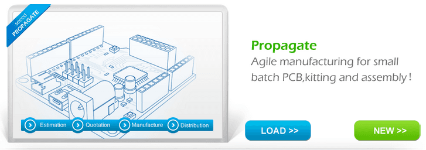

Quantity
Propagate: Agile manufacturing for small batch PCB, kitting and assembly！The minimal quantity is 100pcs.http://www.seeedstudio.com/propagate/
Designer will decide targeted quantity, Seeed start manufacture with corresponding quantity and notify yield on batch ends. The unit cost will be only calculated by project manager.
Current Balance = Sales Qty * Retail Price * (1- handling percentage fee) + Previous Balance
Unit cost will base on target quantity even if batch output does not meet price break. For example, if the yield is only 90% of 500 pcs, the 450 pcs output will still be calculated by 500 pcs batch cost.
Handling percentage fee includes Paypal/TT/Credit card cost, storage, order handling, logistic, post-sales support, web-store(Bazaar) catalog listing. Logistic loss will be deducted from inventory, but not affecting sales,
Please refer to below table for yield and responsibility. There are no situations we can't find the way from! As you realize, essay writers writing service should assist you see the way out from academic papers completing embarrassment.
Yield Responsibility Compensation
Seeed will start manufacture after the payment arrives.
Distribution
Designer could assign the project to distribution via Bazaar. Project manager would be accounted by the quantity sold per month, and record into the project balance. If designer has multiple projects, there will be a grand balance per designer.
Project manager would be accounted every month and recorded in balance.
See Also
Copyright (c) 2008-2016 Seeed Development Limited (www.seeedstudio.com / www.seeed.cc)